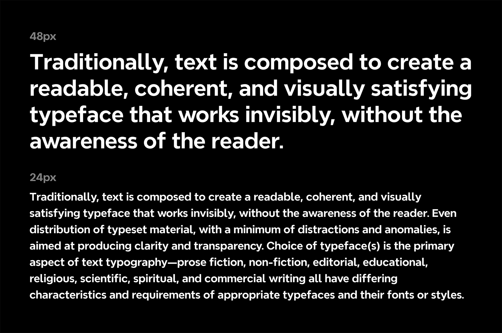
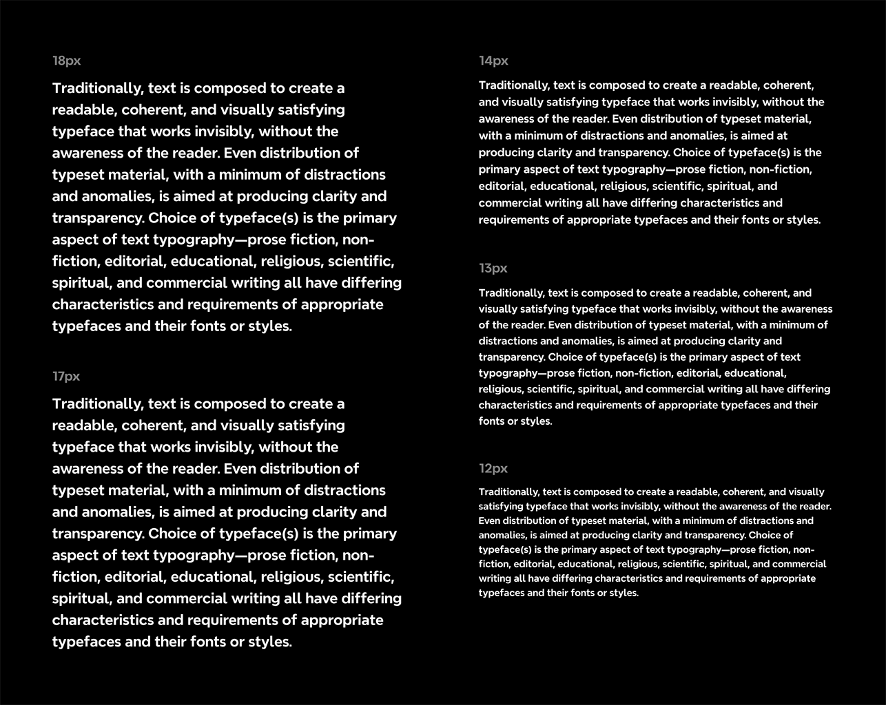

Nevermind is Xmind's signature typeface, derived from the Xmind logo design. This modern font combines geometric and humanist styles, offering both professionalism and approachability for various design applications. The font family comes in 9 weights (100-900) and supports 109 languages, including German, French, Greek, Russian, and more.
To contribute, see github.com/lamzhonghang/nevermind.

